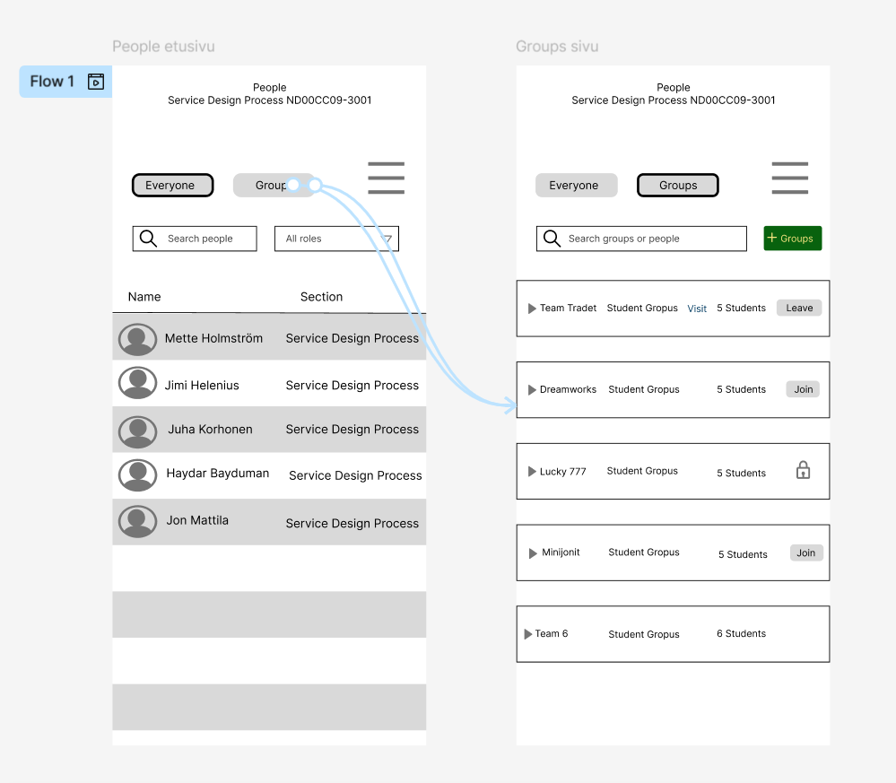

We designed a new mobile view for the Groups section. The goal is to let users access the Groups category on their phone as well, so they can join and leave groups on the go.
We tested the prototype by checking that the Groups button navigates to the Groups page. The navigation worked as expected, so users can reach the Groups section from the mobile view.
Next, we will gather feedback and opinions from users and use them to improve the mobile Groups view.
